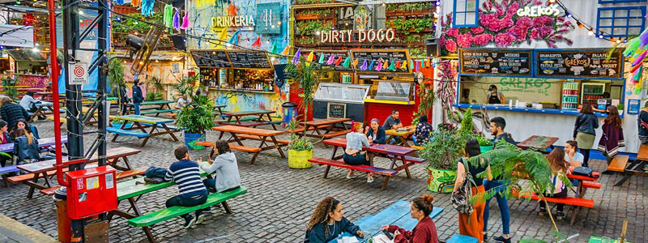

Dónde comer
En este buscador vas a poder filtrar por nombre, tipo de establecimiento y barrio
Ver más
En este buscador vas a poder filtrar por nombre, tipo de establecimiento y barrio
Ver más
En buenos Aires podras encontrar platos típicos y comida de todo el mundo
Ver más
Conocé los patios y mercados en donde podés disfrutar a la mejor gastronoía de la ciudad
ver más